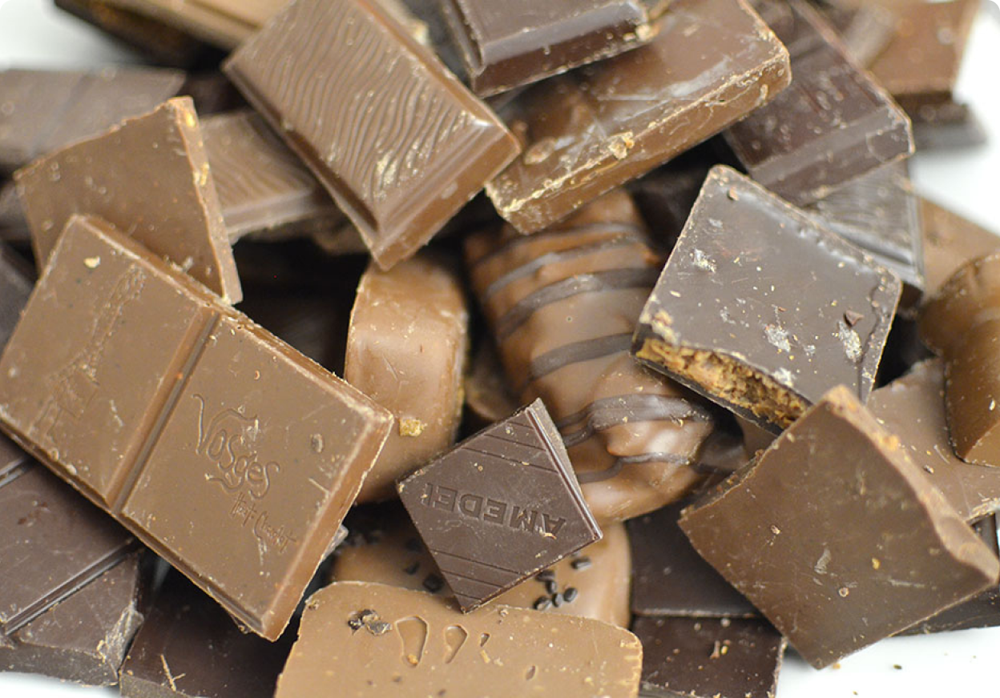

Why do people like chocolates?

People eat chocolate for various reasons, including its delicious taste,
mood-boosting effects, and cultural significance. Chocolate contains
compounds like serotonin and theobromine, which can enhance mood and
reduce stress, making it a popular comfort food. It is also enjoyed as a
treat or reward, often associated with celebrations, holidays, and special
occasions. Additionally, dark chocolate is known for its potential health
benefits, such as antioxidants that support heart health. Whether for
pleasure, emotional comfort, or tradition, chocolate remains one of the
most beloved indulgences worldwide.


Chocolate comes from cacao beans, which were first used by the ancient
Mayans and Aztecs in bitter drinks rather than sweet treats. It contains
antioxidants called flavonoids that may help improve heart health and
brain function. Dark chocolate with high cocoa content is rich in minerals
like iron, magnesium, and zinc. The melting point of chocolate is just
below body temperature, which is why it melts so smoothly in your mouth.
White chocolate, despite its name, contains no cocoa solids—only cocoa
butter, sugar, and milk. Interestingly, chocolate also contains a small
amount of caffeine, making it a mild stimulant.